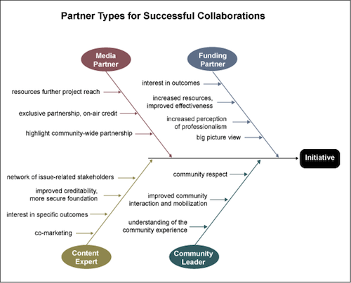

140 Characters Conference
When:
June 17, 2010
Where:
Washington, DC
Website:
http://dc.140conf.com/ DC will be taking place during the afternoon of June 17th, 2010 from 1 PM to 7 PM at: UMC Conference Facility, 900 Massachusetts Avenue NW, Washington, DC 20001.
Early Bird Pricing for #140conf DC ends on May 21st. REGISTER TODAY and save $$$.
Since the launch of the #140conf events, conferences have taken place in: New York City, Los Angeles, London and Tel Aviv. At these events we have explored the effects of twitter on a wide range of topics including: Celebrity, “The Media”, Advertising, Politics, Fashion, Real Estate, Music, Education, Public Safety and Public Diplomacy.
The #140conf events provide a platform for the worldwide twitter community to: listen, connect, share and engage with each other, while collectively exploring the effects of the emerging real-time internet on business.
Our schedule will be unique and fast paced. It is our intention to provide a platform for as many people as possible to share their thoughts and engage in conversation with the attending delegates. You will find individual talks set to: 10 minutes; “Featured talks” 15 and the various panel discussions are set for 15 and 20 minutes.
The take aways from this event will provide the attending delegates knowledge, perspectives and insights to the effects the real-time internet will have on both “we” the people, business and society.
Please consider joining #140conf in Washington DC.
Investing in Impact
The Center for Social Media and The Media Consortium have a released a new report on the necessity of evaluating public media, entitled “Investing in Impact: Media Summits Reveal Pressing Needs, Tools for Evaluating Public Interest Media”:
Needs include:
1) Getting on the same page: Developing shared categories of impact assessment
2) Following the story: Tracking the movement of content and frames across platforms and over time
3) Contextualizing the anecdotal: Refining methods for analyzing shifts in public awareness, deliberation and
behavior
4) Understanding our users: Creating more sophisticated profiles of audience demographics, habits and concerns
5) Moving beyond market assumptions: Defining the uses and limitations of commercial metrics schemes for
assessing public interest mediaProposed tools to help public interest media makers assess their impact include:
1) Putting it all in one place: Building a unified social media dashboard
2) Chasing the frame: Building a social issue buzz tracker
3) Telling your story of impact: Developing model formats and processes for strategically communicating outcomes
4) Asking the right questions: Creating common survey tools for evaluation and audience assessment
5) Identifying networks: Creating a suite of tools that track the growth, health and effectiveness of networksLast, but not least, we outline why funding for joint impact assessment projects is the true “killer app.”
The report also makes a great statement that echoes the Transmission Project’s priority of community engagement over community awareness:
To be clear, effectiveness is not synonymous with advocacy. Traditional journalistic values include holding the powerful to account, engaging users in dialogue about issues, and delivering timely, relevant information—all outcomes that can be tracked. Shifts in technology and user habits mean that old assumptions about what constitutes impact must be reconsidered. Simply reporting on an issue or community is no longer the final outcome in an era of multiplatform, participatory communication.
This report developed out of a series of Impact Summits held around the country, in which our Director Belinda Rawlins participated.
FUTURE OF MUSIC COALITION PRESENTS D.C. POLICY DAY 2010
When:
May 25, 2010
Where:
Washington, DC and ONLINE National research, education and advocacy nonprofit Future of Music Coalition is pleased to announce its upcoming D.C. Policy Day, which takes place at New America Foundation in Washington, D.C. on May 4, 2010.
This year has already seen a host of policy developments that will affect the entire music ecosystem — from network neutrality and the FCC’s authority to regulate the internet to international copyright concerns to the impact of health care reform on the music community. D.C. Policy Day 2010 will bring these issues into focus through informed presentations and panel discussions. A live webcast will bring the conversation to a global audience of artists, academics, industry professionals, journalists, music fans and more.
Topics to be covered include the hotly debated Anti-Counterfeiting Trade Agreement (ACTA), the recent Live Nation/Ticketmaster merger, efforts to preserve an open internet and the health insurance landscape for musicians. Policy Day 2010 will also examine how the creative industries are faring under current Washington leadership as we head into a new election cycle.
Communications, Economics and the Internet
The Center for Media Justice and the Media Action Grassroots Network (MAG-Net) have released a new brief on “Migrants and the Open Internet”:
As people move in search of work and a better life for themselves and their families, they retain their ties to their communities of origin. This desire for community is as crucial to survival as the need for work, or food and shelter. “The experience of hundreds of years of history has taught us that economic and social survival depends on maintaining the identity, language, and traditions that hold a community together.” [David Bacon - “Communities without Borders”] Communication technologies, like email and the Internet, lower the costs that migrants face to keep in touch with their relatives and friends, and help them to remain connected to their home country.
While this is written in the context of migrants, it can apply to any community, or individuals in search of opportunity.
“It is migrants, rather than geeks, who have emerged as the ‘most aggressive’ adopters of new communications tools. Dispersed families with strong ties and limited resources have taken to voice-over-internet services, IM and webcams, all of which are cheap or free. They also go online to get news or to download music from home.”— Swisscom Anthropologist, Stefana Broadbent
Learning from the Media Justice Fund

While the Media Justice Fund of the Funding Exchange has closed its doors, their 6 years of history, impact and thoughts for the future have been summarized in a great 46-page Final Evaluation. I’m struck by the depth of thought and engagement that went into this evaluation as well as its honest practice in exposing both the strengths and difficulties of building capacity in the sector.
Many of its questions and recommendations resonate strongly here at the Transmission Project:
POLICY CHANGE VS. SOCIAL CHANGE?
Whether intended or not, the MJF prioritized short-term policy outcomes. While there needed to be opportunities to fund discrete political opportunities, the work of building constituency and citizen engagement needed to be prioritized. The difficulty around this is that the Funding Exchange (or any funder) needs to be comfortable with, and able, to declare community and movement building outcomes as legitimate milestones on the way to longer term change.RESOURCE LIMITATIONS AND FUNDING STRATEGY
With limited funds to grant, should the funder be more selective of who is funded? Is there a way to take resource realities into consideration, while still reflecting the overall value the MJF has provided, as demonstrated in this assessment? Informants made a number of specific recommendations which included: Funding for specific collaborative projects, that have the greater likelihood of “going to scale”CONVENING, NETWORKING, SUPPORT ROLE:
The MJF role of convening, and providing opportunities for networking, peer exchanges, and learning, is effective. The careful process focus involved in efforts to link national efforts was found to be of particular value. A key element of this is the facilitation, support and assistance—“hand holding,” in some cases—played by MJF program staff (in particular Hye-Jung Park). These MJF staff brought to the table a personal alignment and understanding of the values and strategies of social justice organizing. They displayed a familiarity with national political players and dynamics and paid careful attention to the process of building relationships and opportunities for learning. A number of grantees suggested that the more experienced grantees could be available to mentor the less experienced ones.COMMUNICATION STRATEGY CANNOT BE AN AFTERHOUGHT:
Given the difficulty articulating and making the case for grassroots and local organizing, the promotion of grantees’ progress needs to be prioritized. Consider new communications tools (You-tube, etc.,) for illustrating powerful case studies and examples. This is related to the above strategy [of short-term and long-term goals] – when there is “confusion” or “tension” around how “success” is defined by the program, it is unlikely that these “success stories” will rise up to the surface.YOU NEED CAPACITY TO BUILD CAPACITY
Funding emerging organizations and helping them move to the next level requires the capacity to give adequate technical support, both in organizational development (staff and board development, fundraising, financial management), and in political strategy, coalition development, etc. It is unlikely that all of this can be provided by the same staff person, especially with a significant number of grantees. We note too that the staff need to plan the time and resources required for developing the relationships with grantees so that the TA provided will fit their individual needs. Finally, building capacity requires initial strong commitment from board and staff of the whole organization. You need more than staff buy-in.
The graphic for this post is the Theory of Change as articulated by the Media Justice Fund’s grantees. View the Large Version.
Media, the Internet and Philanthropy
The Transmission Project has always recognized the need for supporting public media and technology—and its necessity for community and economic development. Luis Ubiñas, President of the Ford Foundation, recently made a similarly passionate argument:
In years past, foundations have tended to view grant making focused on Internet policy as a “media” issue. The thinking was, “Let those grant makers already focused on media policy pursue that work, while others remain focused on their own important issues, from education and economic development to human rights and the arts.”
It’s clear that this binary thinking no longer fits with contemporary reality.
Today the Internet is fundamental to every issue we care about. Efficient and low-cost health care, for example, will soon depend on high-speed access to online medical and diagnostic tools. Some 77 percent of Fortune 500 companies accept job applications solely online, according to one study. And digital classrooms that use high-speed Internet are already connecting students with a vast new world of ideas and information…
The effort to ensure universal access to high-speed Internet among all citizens is a critical next step to ensuring that America realizes its great aspiration of equal opportunity for all…
A second major challenge is sometimes harder to see but is as significant. Even if all Americans gain access to the Internet, we need protections in place to ensure that the Internet itself remains neutral and open….
All of us committed to progress, social justice, and rigorous public debate have a stake in this effort, and foundations are uniquely suited to building discussions among business, government, and nonprofit organizations in a way that no other institutions can.
That is why the Ford Foundation is committing $50-million over the next five years to support efforts that ensure both that broadband access to the Internet becomes a reality for all citizens and that public-interest values in the online space itself are protected. We want this to be an open conversation.
- Every person should have the opportunity to access high-speed Internet connections.
- Everyone should have a choice of providers to drive competition and innovation.
- Everyone should have the same legal rights and protections online as off-line.
- We collaborate with citizens, companies, and government to build common-sense rules to prevent censorship and anticompetitive behavior that can stifle innovation.
There is a real debate to be had: How can government, business, and nonprofit organizations lead innovation? How can citizens enjoy the access they need on the Web? How can government craft workable, smart rules of the road for all? The debate needs many voices.
At Ford we have come to see that our commitment in this dialogue is critical to protecting all of the other work our foundation supports; indeed, it is central to supporting any work that relies on the freedom of people to come together and to communicate.
While we are fortunate to be joined by many other grant makers that are realizing the importance of broadband to the issues on which they work, many other donors must join the effort.
Hot on the heels of those prescient statements is a new report from Grantmakers in Film + Electronic Media’s (GFEM): “Funding Media, Strengthening Democracy: Grantmaking for the 21st Century”. It similarly seeks to put information and media at the nexus of social change:
The importance of media and the crucial role played by philanthropy is laid out within these pages. Media, in all its incarnations, influences our decision-making processes, whether personal choices or professional ones, in policy-making, and at the local, national, and international levels. Regardless of how much or how little media one may personally consume, the world is saturated with and driven by media.
Philanthropy, with its mission to improve the human condition, has yet to meet the challenge of keeping pace with the growth and influence of media. We would like to change that. Funding Media, Strengthening Democracy continues a critical dialogue on how philanthropy can best harness its resources—dollars and leadership—to meet the needs of a media-saturated world, in an age of increasingly rapid innovation, where media and social uses of media can have revolutionary impact on individuals and, indeed, entire nations.
The report makes 10 great recommendations (and has the data to back them up), but I will highlight 2 of them here:
First, acknowledge the prevalence and impact of media. Foundations and government agencies of all sizes and in all fields will benefit from recognizing the growing importance of media, and screen-based media in particular, to the future of every field—education, health, the environment, and more.
…
Tenth and finally, funders should recognize that media reinforces their missions. If the public and government are going to understand and appreciate the work of philanthropy, they are going to be looking, or listening, or watching, or gaining and expressing these attitudes through media.
VISTA Viewfinder features the Transmission Project
The VISTA Viewfinder, a monthly publication of AmeriCorps*VISTA, showcased the Transmission Project and some of our Corps members in its feature article on the Digital Divide: “Amending the Right of Every Community to Speak for Itself”.
(To read the article online click “Enter Campus as Guest” or download a convenient PDF)
A quote from our Director, Belinda Rawlins:
It’s Not the Tweet, It’s the Message
As laptops give way to handheld devices and “content providers” scramble to adapt to new media platforms, it’s easy for VISTAs and the groups they serve to become overwhelmed by the warp speed of the gadget race. In the rush, it’s also easy to confuse technology with communication.
That’s where the Transmission Project comes in. “We talk about technology under an umbrella of public media,” says director Belinda Rawlins. “We define media as all of the different ways that people communicate.”
“It’s about the information and finding ways to help people use those tools,” Belinda says. “It all starts with media literacy and feeds from there.”
And some from our Digital Arts Service Corps members:
Wherever citizens mobilize around a particular geographic issue, whether a toxic waste site, town festival, voter registration drive or school district board election, low power radio can be a hyper-local community asset, says Brandy [Doyle], who keeps track of regulatory issues for Prometheus [Radio Project]. “Just like local food, local farming and local energy production - local media is as important as any of these issues.”
…
“I think radio is really useful for certain populations,” says Ian [Smith], whose service supports development and communication outreach for Prometheus. A low-power station costs about $10,000 to get up and running. “It’s cheap to listen to and cheap to produce,” he says.
…
…Reel Grrls participants master a high-tech art form, a confidence booster in itself. Important to the mission are the films themselves. “I also believe that it is crucial that girls’ stories are told,” says VISTA Nickey Robare, another Digital Arts Service Corps member and outreach manager for the film program. “There’s such an overwhelming number of movies and TV programs that girls watch, but they are not seeing the stories of girls like them.”
…
“You can’t have a functional democracy without a functional media,” says VISTA Nicole Pion, who is spending a second year in the Digital Arts Service Corps with the Urbana-Champaign Independent Media Center.
FutureEverything 2010 Conference
When:
May 12, 2010 - May 15, 2010
Where:
Manchester
Website:
http://futureeverything.org We are excited to introduce the FutureEverything conference programme for 2010, our best and most ambitious yet. We are delighted to present the world’s best speakers under our conference themes of ImagineEverything, Unlimited Connectivity, Open Data and The City Experiment.
The FutureEverything conference will take you on a journey through the most cutting-edge developments in a range of exciting fields. Join us to hear about why governments should open up the data that they hold, and what we can do with this information to change our lives. Listen to leading artists and scientists discuss what we can dream and do with unlimited bandwidth. Visionary speakers will illuminate the science of the web, the ways the networked city is being rewired, how poetry can be encoded into DNA, ways we can play the city like an instrument, and how relationships between generations are going to change over the next hundred years.
The date of the inaugural FutureEverything festival is 12-15 May 2010, obtain your festival passes now here: http://futureeverything.org/tickets
Grassroots & Groundwork: Seizing Opportunities to Reduce Poverty and Build Sustainable Prosperity
When:
May 13, 2010 - May 14, 2010
Where:
Portland, OR This conference is about shining a light on practical strategies and tools working – right now – to reduce poverty and build sustainable prosperity.
Grassroots & Groundwork touches on a wide range of solutions in a variety of venues:
* Smaller, more intimate 70-minute break-out sessions that showcase proven, innovative poverty-reduction models and tools
* Unique Q&A session with distinguished activist Marian Wright Edelman, founder of Children’s Defense Fund
* Keynote address by Paul Saginaw, nationally recognized advocate for socially responsible business
* Site visits to successful and unique Portland poverty-reduction projects, sponsored by the Portland Economic Opportunity Initiative – These are filling up fast, so don’t miss out!
* Half-day hands-on interactive workshops as part of the Community-Builder Institute.
You’ll have a chance to network throughout the conference. We’re even hosting a special networking reception for all conferees on Thursday night.
Don’t miss this opportunity to share, learn and connect!
Sign up for e-mail updates and check this site often! Conference details updated regularly.
Partner types of successful collaborations

The National Center for Media Engagement has a wonderful set of tools and resources for planning, executing and evaluating community engagement (which also happens to be one of the Transmission Project’s core structural values). The above graphic is from the section entitled “Identifying Partners”.
I was reintroduced to the Center’s resources by Colin Rhinesmith’s “It’s Time for Public Media Makers to Collaborate” published on NewPublicMedia.org:
Together, public broadcasters (Pubcasters) and community media makers (PEG access TV, community radio, youth media, etc.) can help create a public media system that’s greater than the sum of its parts.